Executive Summary
This project demonstrates the complete deployment of an enterprise-grade Microsoft Active Directory infrastructure built entirely within a virtual environment using VMware Workstation.
The objective was not simply to install Active Directory, but to design a structured enterprise identity infrastructure following Microsoft administration and security best practices.
The environment was built around a dedicated Active Directory forest named yasserteach.local, with DC01 serving as the primary Domain Controller and DNS Server.
The project includes:
Enterprise network configuration
Active Directory Domain Services deployment
DNS integration
Organizational Unit (OU) design
Enterprise user provisioning
PowerShell automation
Security Group administration
Role-Based Access Control (RBAC)
AGDLP implementation
Enterprise SMB File Shares
NTFS permission management
Least Privilege implementation
Rather than assigning permissions directly to users, access is managed through layered Security Groups and Domain Local Groups using Microsoft's AGDLP model.
PowerShell automation was incorporated throughout the deployment to automate repetitive administrative tasks, improve consistency, and demonstrate enterprise Windows administration capabilities.
The completed infrastructure closely resembles a production Active Directory environment and demonstrates practical experience expected from Windows Server Administrators, Infrastructure Engineers, and Enterprise Systems Engineers.
Business Scenario
A fictional company requires a centralized identity management solution capable of supporting multiple departments while maintaining secure authentication, simplified administration, and scalable permission management.
The organization currently lacks centralized user administration, resulting in inconsistent access control, duplicated administrative effort, and increasing operational complexity.
To modernize the infrastructure, Microsoft Active Directory Domain Services was selected as the organization's identity platform.
The company requires a solution capable of providing:
Centralized Authentication
Centralized Authorization
Department-Based Administration
Enterprise Security Groups
PowerShell Automation
Role-Based Access Control (RBAC)
Enterprise File Sharing
Secure NTFS Permissions
The completed solution provides a scalable enterprise directory capable of supporting future growth while maintaining consistent administrative practices.
Project Objectives
The objectives of this project were to:
Deploy a new Active Directory Forest named yasserteach.local.
Configure DC01 as the Enterprise Domain Controller.
Configure integrated DNS services.
Design a scalable Organizational Unit hierarchy.
Create enterprise user accounts.
Implement Global Security Groups.
Implement Domain Local Security Groups.
Apply Microsoft's AGDLP security model.
Configure centralized SMB file sharing.
Secure departmental folders using NTFS permissions.
Apply the Principle of Least Privilege.
Automate Active Directory administration using PowerShell.
Validate the entire enterprise infrastructure.
Project Scope
The implementation includes the following components.
Identity Services
Active Directory Domain Services
DNS Server
Kerberos Authentication
LDAP Directory Services
Enterprise Administration
Organizational Units
User Accounts
Security Groups
Domain Local Groups
Administrative Delegation
Security
Role-Based Access Control
AGDLP
NTFS Permissions
Share Permissions
Least Privilege
Automation
Bulk User Creation
Group Membership Automation
AGDLP Automation
NTFS Permission Automation
File Services
Enterprise SMB Shares
Department File Structure
Secure Folder Permissions
Project Environment
| Component | Configuration |
|---|---|
| Hypervisor | VMware Workstation |
| Operating System | Windows Server 2022 |
| Client OS | Windows 11 |
| Forest | yasserteach.local |
| Domain | yasserteach.local |
| Domain Controller | DC01 |
| Client Computer | W11-01 |
| DNS Server | DC01 |
| Directory Service | Active Directory Domain Services |
| Authentication | Kerberos |
| File Sharing | SMB |
| Automation | Windows PowerShell |
Enterprise Infrastructure
Domain Information
| Component | Value |
|---|---|
| Forest Name | yasserteach.local |
| Domain Name | yasserteach.local |
| NetBIOS Name | YASSERTEACH |
| Domain Controller | DC01 |
| Client Computer | W11-01 |
Organizational Unit Design
The Active Directory hierarchy was designed around a dedicated Corporate Organizational Unit to simplify administration and future expansion.
The implemented Organizational Units include:
| Organizational Unit |
|---|
| Corporate |
| IT |
| HR |
| Finance |
| Operations |
| Executives |
| Users |
| Groups |
Security Groups
The project implements department-based Global Security Groups.
| Group Name | Scope | Type |
|---|---|---|
| GG_IT | Global | Security |
| GG_HR | Global | Security |
| GG_Finance | Global | Security |
| GG_Operations | Global | Security |
| GG_Executives | Global | Security |
Domain Local Groups
Domain Local Groups were created to manage permissions on enterprise resources.
| Group Name | Purpose |
|---|---|
| DL_IT_RW | Modify IT Folder (إذا موجود) |
| DL_HR_RW | Modify HR Folder |
| DL_Finance_RW | Modify Finance Folder |
2. Infrastructure Deployment
This phase documents the deployment of the core infrastructure used throughout the project. The environment was built from the ground up, beginning with virtual networking, followed by Windows Server preparation, Active Directory installation, and finally the deployment of the yasserteach.local domain.
The primary objective of this phase was to establish a stable, secure, and scalable identity infrastructure capable of supporting enterprise authentication and centralized administration.
2.1 Configuring the Virtual Network Infrastructure
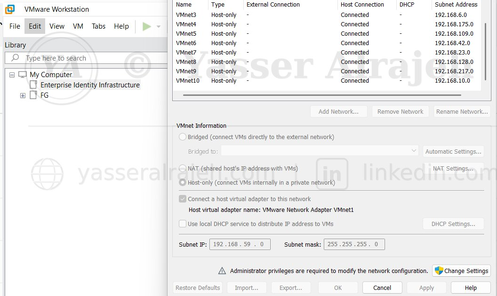
The project began by configuring an isolated virtual network using VMware Workstation Virtual Network Editor.
A dedicated Host-Only network was created to ensure that all virtual machines communicate exclusively within the laboratory environment without relying on external DHCP or Internet connectivity.
The isolated network serves as the communication backbone for the following systems:
DC01
W11-01
This configuration provides complete administrative control over IP addressing, DNS resolution, and Active Directory communication.
Why This Matters
Enterprise Active Directory environments should always be deployed on a predictable and controlled network where infrastructure services are isolated from production traffic.
2.2 Preparing Windows Server
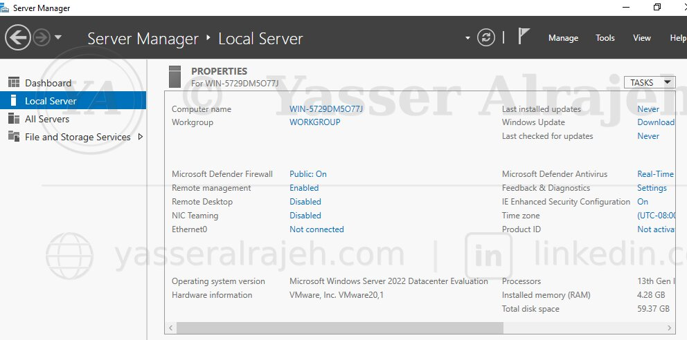
After installing Windows Server 2022, the initial server configuration was performed using Server Manager.
This phase verifies that the operating system is healthy before installing enterprise roles.
Initial validation included:
Local Server status
Computer information
Windows Updates
Time configuration
Network adapter status
Remote management
Server Manager provides centralized administration for Windows Server infrastructure and becomes the primary management console throughout the project.
2.3 Renaming the Enterprise Server
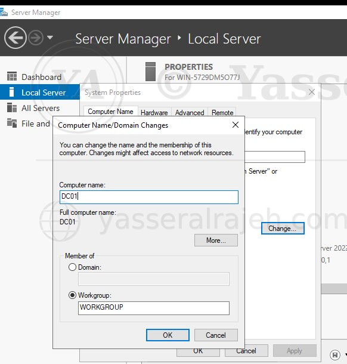
The default computer name was replaced with DC01.
Using descriptive server names is considered an enterprise best practice because administrators can immediately identify the role of each system.
The naming convention used throughout this project is:
| Server | Purpose |
|---|---|
| DC01 | Domain Controller |
| W11-01 | Enterprise Client |
As the infrastructure expands, future servers could include:
FS01 (File Server)
APP01 (Application Server)
SQL01 (Database Server)
Maintaining standardized naming conventions improves documentation, monitoring, troubleshooting, and operational consistency.
2.4 Configuring Static Network Settings
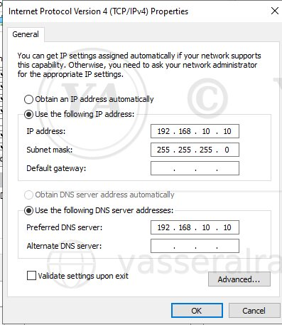
Before deploying Active Directory, DC01 was configured with a static IPv4 address.
Unlike client devices, infrastructure servers must maintain permanent IP addresses to guarantee that services such as DNS and Active Directory remain continuously available.
The configuration included:
Static IPv4 Address
Subnet Mask
Default Gateway
Preferred DNS Server
Since DC01 also hosts DNS, the DNS configuration points directly to the Domain Controller itself.
Best Practice
Microsoft recommends assigning static IP addresses to all Domain Controllers to prevent authentication failures caused by changing network addresses.
2.5 Validating Network Configuration
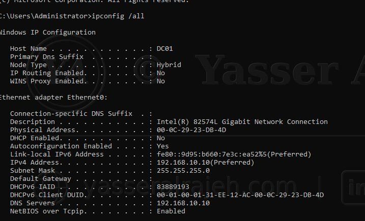
The command:
ipconfig /all
was executed to verify the network configuration before Active Directory installation.
Validation confirmed:
Computer Name = DC01
Correct IPv4 Address
Correct Subnet Mask
Correct DNS Server
Active Network Adapter
Verifying network configuration before deploying Active Directory reduces deployment issues and ensures reliable communication between infrastructure services.
2.6 Installing Active Directory Domain Services
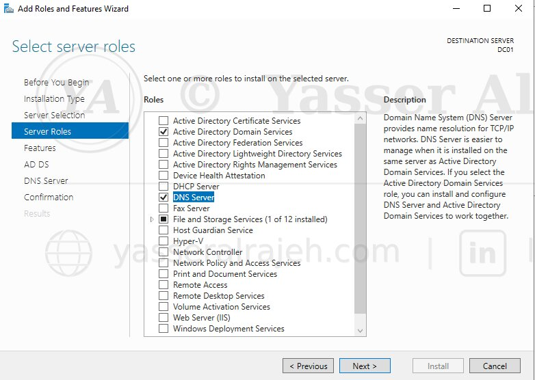
The Active Directory Domain Services (AD DS) role was installed using Server Manager.
During the same installation process, the DNS Server role was also deployed because Active Directory relies heavily on DNS for locating Domain Controllers and other directory services.
The deployment transforms Windows Server from a standalone operating system into the foundation of an enterprise identity infrastructure.
Installed Roles
| Role | Purpose |
|---|---|
| Active Directory Domain Services | Identity Management |
| DNS Server | Name Resolution |
2.7 Promoting DC01 to a Domain Controller
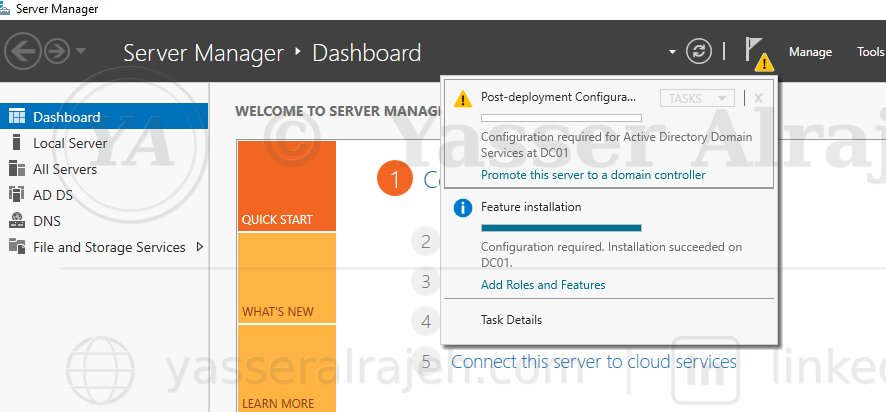
Following the successful installation of AD DS, DC01 was promoted to a Domain Controller.
This operation installs the Active Directory database, SYSVOL, authentication services, and replication components required to manage enterprise identities.
Once promotion is complete, DC01 becomes responsible for:
User Authentication
Computer Authentication
Kerberos
LDAP
Group Policy Processing
DNS Integration
This represents the transition from a standalone server to an enterprise identity server.
2.8 Creating the Active Directory Forest
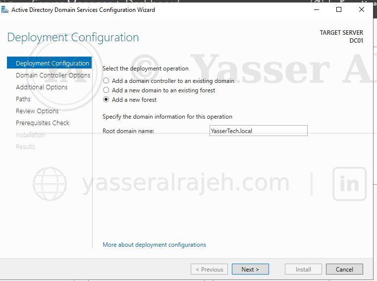
A new Active Directory forest named:
yasserteach.local
was created as the root of the enterprise directory infrastructure.
This forest contains:
Domain Controller (DC01)
DNS Namespace
Active Directory Database
Security Boundary
Authentication Services
Using a dedicated forest provides centralized identity management for all users, computers, groups, and enterprise resources.
2.9 Active Directory Prerequisite Validation
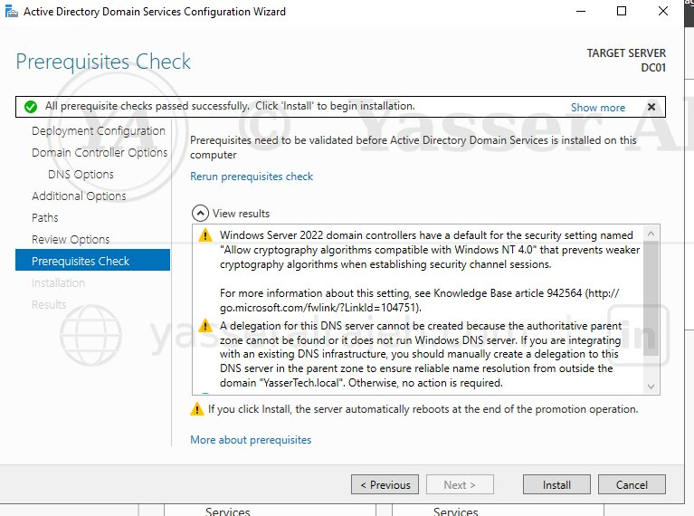
Before completing the Domain Controller promotion, Windows Server automatically performed a prerequisite validation.
The validation confirmed that:
Networking was configured correctly.
DNS requirements were satisfied.
Active Directory dependencies were available.
No blocking configuration issues existed.
Successful validation indicates that the server is ready to host enterprise directory services.
2.10 Successful Domain Controller Deployment
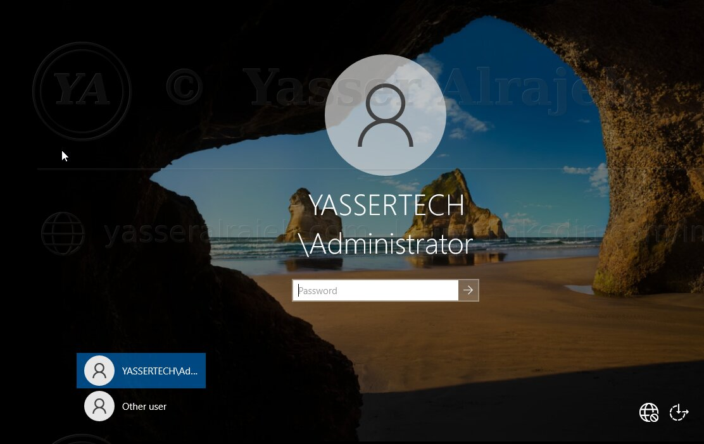
Following the automatic restart, DC01 successfully booted as the first Domain Controller in the yasserteach.local forest.
Logging in using the Domain Administrator account confirmed that:
Active Directory was operational.
DNS was operational.
Authentication services were functioning correctly.
The enterprise identity infrastructure was successfully deployed.
At this stage, the environment was ready for the creation of Organizational Units, enterprise users, security groups, and centralized identity management.
3. Active Directory Organizational Design
After successfully deploying DC01 as the first Domain Controller in the yasserteach.local forest, the next phase focused on designing the Active Directory structure.
Rather than storing all directory objects inside the default containers, a structured Organizational Unit (OU) hierarchy was designed to simulate a real enterprise environment.
The objective was to organize users, departments, and administrative objects in a scalable manner while preparing the infrastructure for Group Policy deployment, delegated administration, and Role-Based Access Control (RBAC).
3.1 Accessing Active Directory Users and Computers
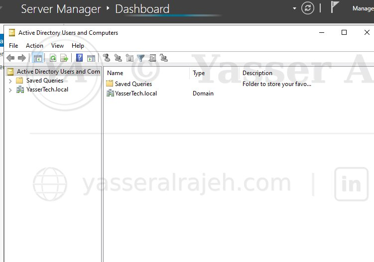
After completing the deployment of DC01, the Active Directory Users and Computers (ADUC) management console was opened to begin configuring the enterprise directory.
ADUC serves as the primary administrative interface for managing all Active Directory objects, including Organizational Units, users, computers, groups, and administrative containers.
From this point onward, all identity management tasks within the yasserteach.local domain were performed through this console or automated using PowerShell.
Administrative Tasks Performed
Creating Organizational Units
Creating Users
Managing Security Groups
Organizing Directory Objects
Delegating Administration
3.2 Creating the Corporate Organizational Unit
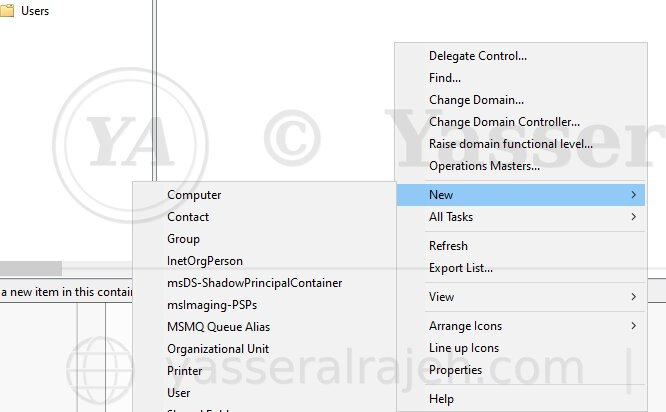
Creating theA top-level Organizational Unit named Corporate was created to serve as the primary administrative container within the yasserteach.local domain.
Instead of storing users and groups in the default Active Directory containers, the Corporate OU provides a dedicated location for organizing business departments according to enterprise administration best practices.
Creating a dedicated root Organizational Unit also simplifies future Group Policy deployment and delegated administration.
Purpose
Centralize administration
Separate business departments
Improve scalability
Simplify future Group Policy deployment
3.3 Deploying the Enterprise OU Structure
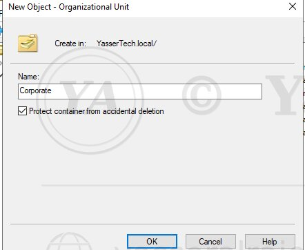
Inside the Corporate Organizational Unit, dedicated Organizational Units were created to represent the company's business departments.
The implemented structure includes:
| Organizational Unit |
|---|
| Corporate |
| IT |
| HR |
| Finance |
| Operations |
| Executives |
| Groups (if applicable) |
| Users (if applicable) |
This hierarchy closely resembles the logical structure commonly found in enterprise Active Directory environments.
Benefits
Clear separation of departments
Simplified administration
Easier troubleshooting
Improved scalability
Better Group Policy targeting
3.4 Reviewing the Organizational Unit Hierarchy
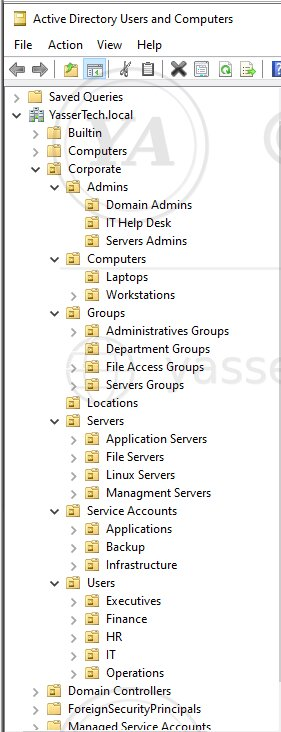
After creating the Organizational Units, the directory hierarchy was reviewed to verify that each department had been placed correctly beneath the Corporate Organizational Unit.
This validation ensures that future administrative tasks, such as Group Policy deployment and delegated permissions, can be applied accurately to individual departments without affecting the rest of the organization.
OU Hierarchy
yasserteach.local
│
└── Corporate
├── IT
├── HR
├── Finance
├── Operations
└── Executives
3.5 Creating Enterprise User Accounts
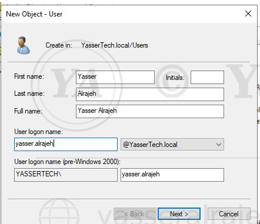
Enterprise user accounts were created for each department within the yasserteach.local domain.
Each user was placed inside the appropriate Organizational Unit according to their department, ensuring that administrative policies and future access controls could be applied consistently.
Unlike local Windows accounts, these users authenticate directly against DC01, allowing centralized identity management across the environment.
Administrative Benefits
Centralized authentication
Simplified user management
Department-based organization
Consistent account provisioning
3.6 Organizing Users into Departmental OUs
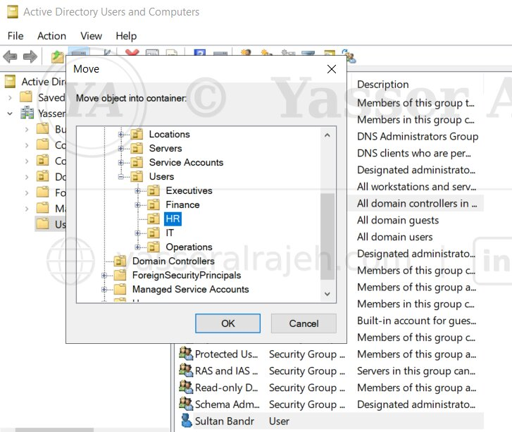
After creating the user accounts, they were moved into their corresponding departmental Organizational Units.
This organization reflects real-world enterprise administration practices where user accounts are grouped according to business function rather than stored in the default Users container.
By organizing users into departmental OUs, administrators can later apply targeted Group Policies and delegate administrative permissions more effectively.
3.7 Automating User Provisioning with PowerShell
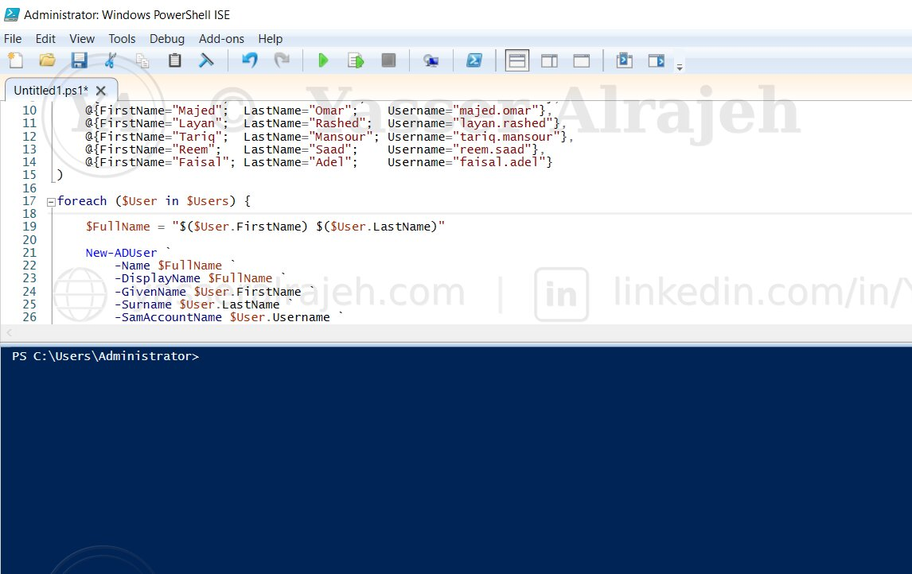
To improve deployment efficiency, PowerShell was used to automate the creation of Active Directory user accounts.
Rather than creating each account manually through the graphical interface, PowerShell cmdlets were used to provision multiple users in a consistent and repeatable manner.
Automation reduces deployment time, minimizes human error, and aligns with enterprise administration practices.
PowerShell Cmdlets Used
New-ADUser
Set-ADUser
Enable-ADAccount
3.8 Completed Enterprise User Directory
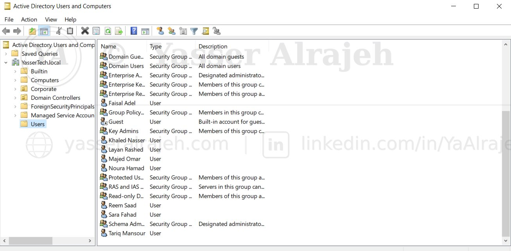
Following the automated provisioning process, the Active Directory environment contained enterprise user accounts distributed across their respective Organizational Units.
The resulting directory structure provides a centralized identity repository for authentication, authorization, and future access control implementation.
At this stage, the yasserteach.local domain was fully prepared for the deployment of Security Groups and Role-Based Access Control.
3.9 Reviewing the Final Directory Structure
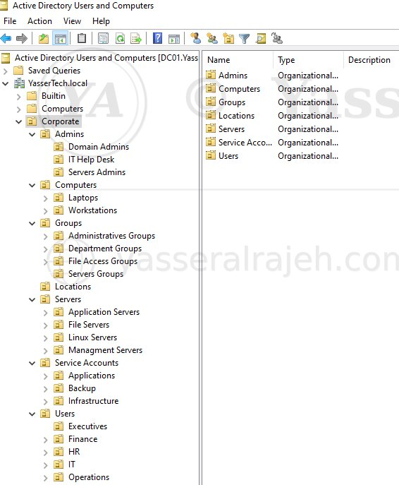
A final review of the Active Directory hierarchy confirmed that Organizational Units and user accounts were organized correctly within the Corporate structure.
The completed design reflects an enterprise-ready directory architecture capable of supporting:
Security Groups
Group Policy
Delegated Administration
RBAC
AGDLP
Enterprise File Services
Organizational Structure Summary
| Component | Status |
|---|---|
| Corporate OU | ✅ Created |
| IT OU | ✅ Created |
| HR OU | ✅ Created |
| Finance OU | ✅ Created |
| Operations OU | ✅ Created |
| Executives OU | ✅ Created |
| Enterprise Users | ✅ Created |
| PowerShell User Provisioning | ✅ Completed |
| Organizational Hierarchy | ✅ Validated |
4. Security Groups and Role-Based Access Control (RBAC)
After completing the Active Directory organizational structure and provisioning enterprise user accounts, the next phase focused on implementing Role-Based Access Control (RBAC).
Rather than assigning permissions directly to user accounts, Global Security Groups were created to represent organizational departments. This approach simplifies permission management, improves scalability, and aligns with Microsoft's recommended enterprise administration practices.
The implementation also prepared the infrastructure for the AGDLP model by separating user administration from resource permission management.
4.1 Creating Enterprise Global Security Groups
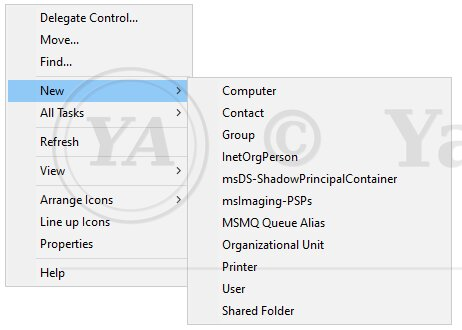
Dedicated Global Security Groups were created for each department within the yasserteach.local domain.
Each Global Group represents a business department and is responsible for holding user memberships only. No permissions are assigned directly to these groups.
The following naming convention was implemented:
| Security Group | Department |
|---|---|
| GG_IT | Information Technology |
| GG_HR | Human Resources |
| GG_Finance | Finance |
| GG_Operations | Operations |
| GG_Executives | Executive Management |
The GG prefix represents Global Group, making it immediately identifiable within the Active Directory environment.
Why Global Groups?
Global Groups should contain users from the same domain and represent organizational roles rather than resource permissions.
This separation improves long-term administration and follows Microsoft's recommended Active Directory design.
4.2 Implementing Role-Based Access Control
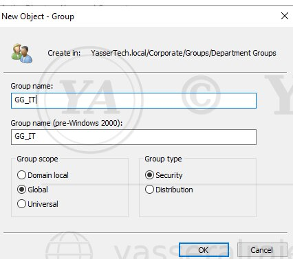
The GG_IT Global Security Group was created to represent all users belonging to the Information Technology department.
Instead of assigning permissions directly to IT users, permissions will later be granted to the group itself, allowing all members to inherit the required access automatically.
This implementation follows the principle of Role-Based Access Control (RBAC), where access is granted according to job responsibilities rather than individual identities.
Benefits
Simplified permission management
Reduced administrative effort
Easier auditing
Consistent access control
Faster onboarding and offboarding
4.3 Validating Security Group Configuration
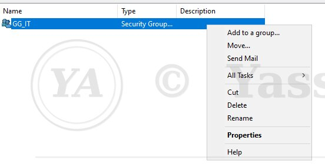
After creating the Global Security Groups, each group was reviewed to verify that it had been created successfully within the Corporate Organizational Unit.
The validation process confirmed that the groups were available for future membership assignments and permission delegation.
4.4 Assigning Users to Security Groups
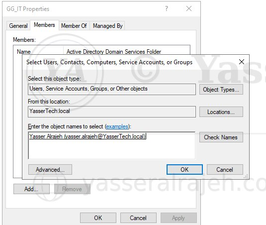
Enterprise users were assigned to the appropriate Global Security Groups based on their department.
Examples include:
IT users → GG_IT
HR users → GG_HR
Finance users → GG_Finance
Operations users → GG_Operations
Executive staff → GG_Executives
This approach ensures that future permission changes only require modifying group membership instead of changing permissions on individual user accounts.
Enterprise Best Practice
Never assign permissions directly to user accounts.
Always assign permissions to Security Groups.
4.5 Verifying Group Membership
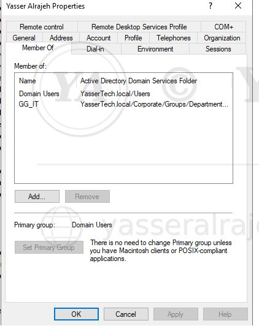
Group membership was verified after users were assigned to their respective Global Security Groups.
This validation confirms that all users will inherit permissions through their department group once resource access is configured.
Successful membership verification is an important step before implementing AGDLP.
4.6 Reviewing the Enterprise Security Group Structure
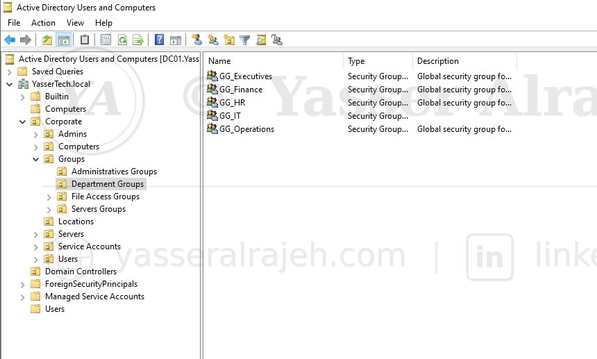
The completed Security Group structure now represents the organizational roles within the company.
Each department owns a dedicated Global Security Group that will later become part of the AGDLP permission model.
The completed implementation includes:
| Global Group | Purpose |
|---|---|
| GG_IT | IT Department |
| GG_HR | Human Resources |
| GG_Finance | Finance |
| GG_Operations | Operations |
| GG_Executives | Executive Management |
4.7 Automating Group Membership with PowerShell
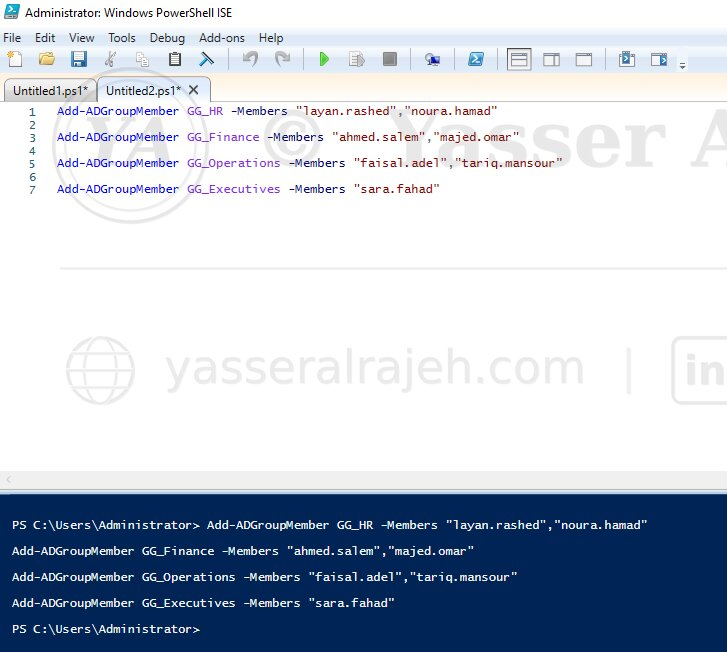
Rather than manually assigning every user through the graphical interface, PowerShell was used to automate Security Group membership.
The following cmdlet was used:
Add-ADGroupMember
Automating membership assignments reduces repetitive work while ensuring that all users are added consistently.
Administrative Benefits
Faster deployment
Consistent configuration
Bulk administration
Reduced human error
Repeatable deployment process
4.8 Managing Department Membership
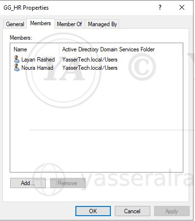
Membership within departmental Security Groups was reviewed to verify that all accounts were associated with the correct organizational role.
This validation ensures that users inherit permissions only through their designated department group.
4.9 Creating Department Resource Groups
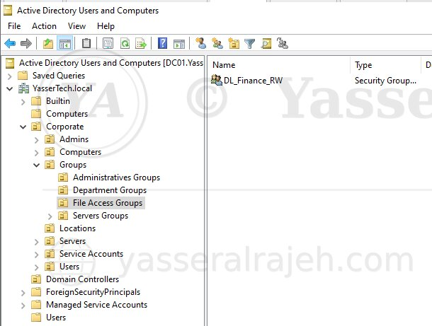
In preparation for implementing AGDLP, department-specific resource groups were created.
One example is:
Finance_RW
The RW suffix indicates Read/Write access.
These groups represent the level of access that will eventually be granted to enterprise file shares.
Naming Convention
| Prefix | Meaning |
|---|---|
| GG | Global Group |
| DL | Domain Local Group |
| RW | Read/Write |
This naming convention allows administrators to immediately identify the purpose of each group without opening its properties.
4.10 Automating Active Directory Administration
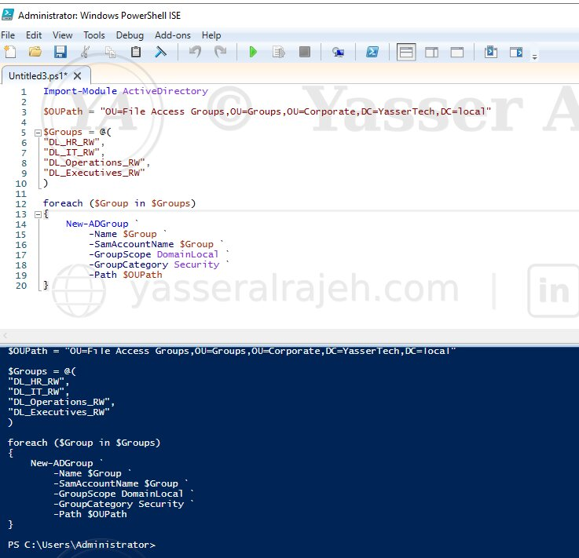
Directory Administration with PowerShell
Description
PowerShell automation was extended beyond user provisioning to include Security Group creation and membership management.
Throughout the project, PowerShell was used to automate:
User creation
Security Group creation
Membership assignment
Directory administration
The combination of graphical administration and scripting demonstrates enterprise-level Windows Server administration capabilities commonly expected from Infrastructure Engineers and Windows Administrators.
Security Group Design Summary
| Component | Status |
|---|---|
| GG_IT | ✅ Created |
| GG_HR | ✅ Created |
| GG_Finance | ✅ Created |
| GG_Operations | ✅ Created |
| GG_Executives | ✅ Created |
| User Membership | ✅ Assigned |
| PowerShell Automation | ✅ Implemented |
| RBAC | ✅ Implemented |
5. Enterprise File Services and AGDLP Implementation
After implementing Global Security Groups and Role-Based Access Control (RBAC), the next phase focused on securing enterprise file services using Microsoft's recommended AGDLP model.
Rather than assigning NTFS permissions directly to users or Global Groups, dedicated Domain Local Groups were introduced to separate identity management from permission management.
This design provides a scalable, maintainable, and secure access control model suitable for enterprise environments.
5.1 Creating Domain Local Security Groups
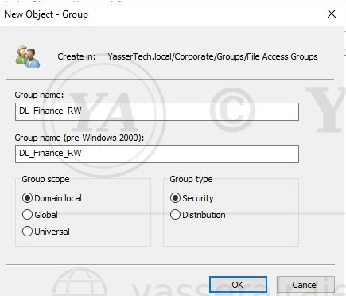
To implement Microsoft's AGDLP model, dedicated Domain Local Security Groups were created to manage access to enterprise file resources.
Unlike Global Groups, which contain user accounts, Domain Local Groups are responsible only for holding permissions assigned to folders and shared resources.
The following Domain Local Groups were created:
| Domain Local Group | Purpose |
|---|---|
| DL_Finance_RW | Finance Folder (Read/Write) |
| DL_HR_RW | HR Folder (Read/Write) |
| DL_IT_RW (إذا موجود) | IT Folder (Read/Write) |
| DL_Operations_RW (إذا موجود) | Operations Folder (Read/Write) |
| DL_Executives_RW (إذا موجود) | Executive Folder (Read/Write) |
The DL prefix identifies the group as a Domain Local Security Group, while the RW suffix indicates Read/Write access.
5.2 Implementing Microsoft's AGDLP Model
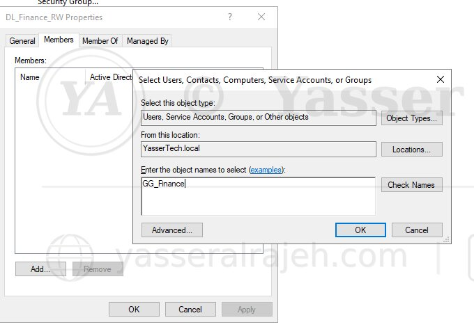
The project implements Microsoft's recommended AGDLP architecture.
Instead of granting permissions directly to users, Global Security Groups were nested inside Domain Local Groups.
The implementation follows this structure:
Domain Users
│
▼
GG_Finance
│
▼
DL_Finance_RW
│
▼
Finance Folder
│
▼
Modify Permission
This layered design separates identity management from permission management, making future administration significantly easier.
For example:
Finance employees become members of GG_Finance.
GG_Finance becomes a member of DL_Finance_RW.
DL_Finance_RW receives Modify permission on the Finance folder.
If a new Finance employee joins the company, the administrator only needs to add the user to GG_Finance. No folder permissions need to be modified.
5.3 Automating AGDLP with PowerShell
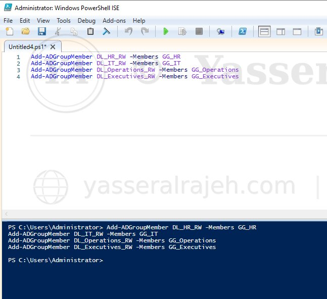
PowerShell was used to automate the nesting of Global Groups into Domain Local Groups.
The following PowerShell cmdlet was used:
Add-ADGroupMember
Instead of manually configuring every relationship, PowerShell provides a faster and more consistent deployment process.
Automation ensures that every department follows the same permission model while reducing administrative effort.
5.4 Designing the Enterprise File Structure
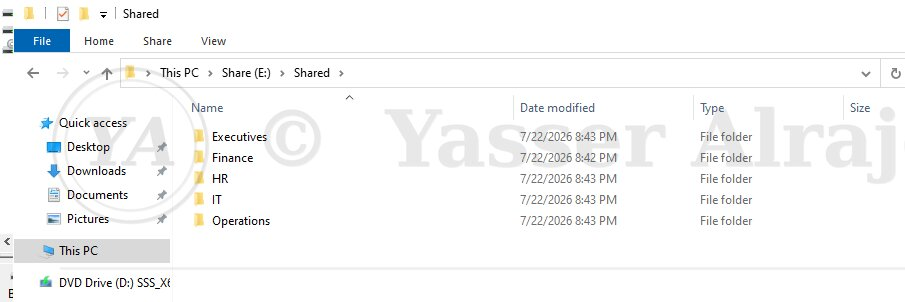
A centralized file repository was created to simulate an enterprise file server.
Separate folders were created for each department.
The implemented folder structure includes:
D:\Shares
│
├── Finance
├── HR
├── IT
├── Operations
└── Executives
Each folder represents departmental data that will later receive dedicated NTFS permissions.
This structure simplifies administration while keeping business data logically separated.
5.5 Publishing Enterprise SMB Shares
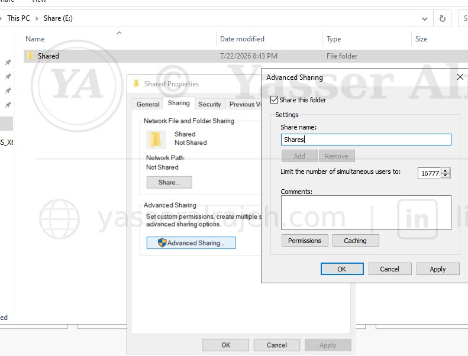
After creating the departmental folder structure, the root share was published using Microsoft's SMB file sharing service.
Publishing the shared folder allows authenticated domain users to access centralized resources across the yasserteach.local domain.
At this stage, access is still controlled by NTFS permissions rather than Share Permissions alone.
Enterprise environments typically grant broad Share Permissions while relying on NTFS permissions for detailed security enforcement.
5.6 Configuring NTFS Security Permissions
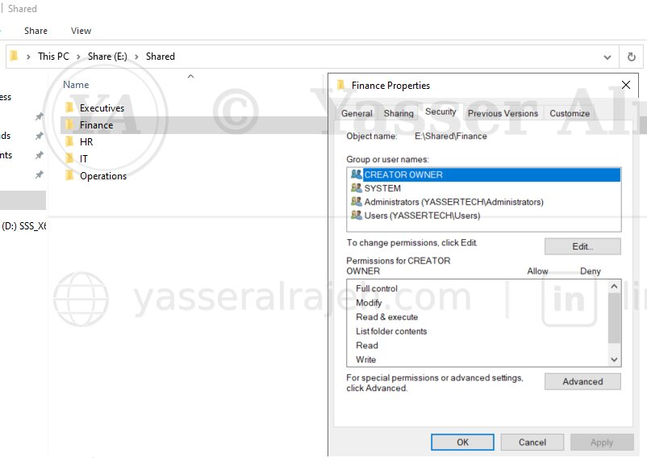
NTFS permissions were configured using Domain Local Security Groups instead of assigning permissions directly to individual users.
This design greatly simplifies permission management.
Instead of adding dozens of Finance users to the Finance folder, only the DL_Finance_RW group receives the required permissions.
Every Finance employee automatically inherits access through group membership.
5.7 Removing Permission Inheritance
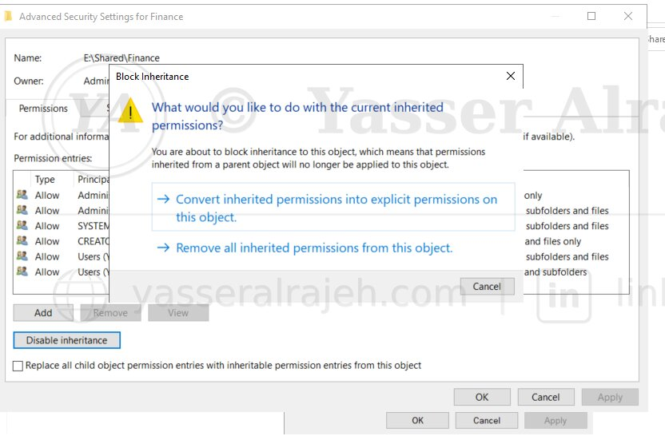
Permission inheritance was disabled on departmental folders before assigning explicit permissions.
Removing inherited permissions prevents accidental access inherited from parent directories and allows each department to have an independent security configuration.
This step significantly improves security by ensuring that only explicitly authorized groups receive access.
5.8 Assigning Domain Local Groups to NTFS
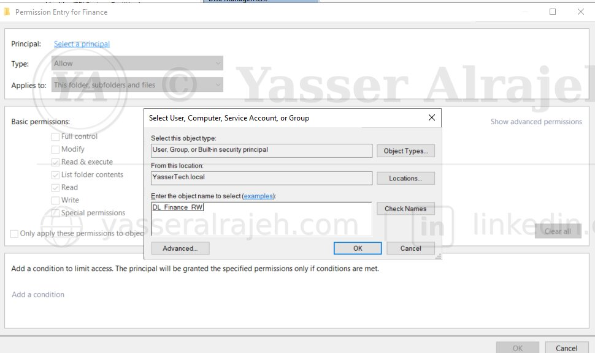
The DL_Finance_RW group was assigned directly to the Finance folder.
This represents the final stage of Microsoft's AGDLP model.
The resulting permission flow becomes:
User
↓
GG_Finance
↓
DL_Finance_RW
↓
Finance Folder
↓
Modify Permission
No permissions are assigned directly to users.
This approach greatly simplifies permission management throughout the enterprise.
5.9 Applying the Principle of Least Privilege
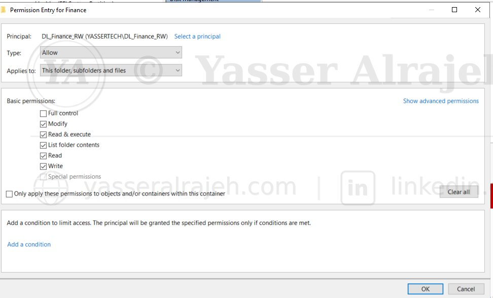
Rather than granting Full Control, departmental groups were granted only Modify permissions.
The Modify permission allows users to:
Read files
Create files
Modify files
Delete files
while preventing unnecessary administrative privileges.
Implementing the Principle of Least Privilege reduces the organization's attack surface and minimizes the impact of compromised user accounts.
5.10 Automating NTFS Permissions
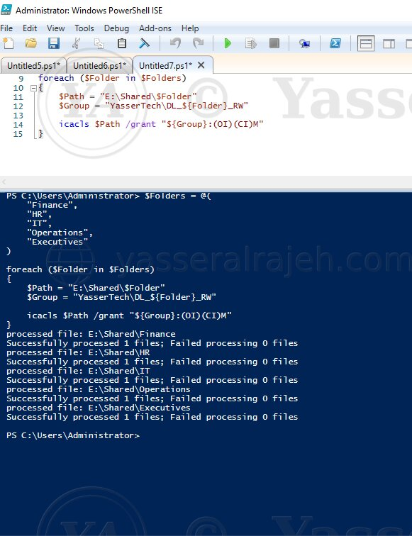
PowerShell together with the icacls utility was used to automate NTFS permission assignment.
The automation applies identical permission structures across departmental folders while ensuring consistency.
Using icacls also allows administrators to export, verify, and recreate permissions whenever necessary.
5.11 Validating NTFS Permissions
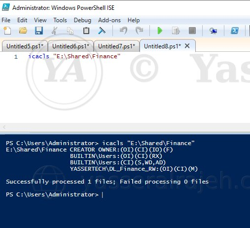
After configuring NTFS permissions, the icacls command was used to verify that every departmental folder had received the intended permissions.The validation confirmed that:
DL_Finance_RW was assigned correctly.
Permission inheritance was removed.
Modify permissions were applied successfully.
Access control matched the AGDLP design.
Enterprise AGDLP Summary
| Layer | Implemented Group |
|---|---|
| Accounts | Enterprise Users |
| Global Groups | GG_IT, GG_HR, GG_Finance, GG_Operations, GG_Executives |
| Domain Local Groups | DL_IT_RW, DL_HR_RW, DL_Finance_RW |
| Permissions | Modify |
| Resources | Departmental SMB Shares |
6. Project Validation and Final Results
After completing the deployment of the yasserteach.local Active Directory infrastructure, a comprehensive validation process was performed to ensure that every component functioned correctly and that the environment met enterprise administration standards.
Testing focused on verifying identity management, security group implementation, file services, NTFS permissions, PowerShell automation, and access control.
The successful completion of these validation activities confirms that the environment is fully operational and ready for enterprise administration.
6.1 Active Directory Validation
The Active Directory deployment was validated after the successful promotion of DC01.
The following components were verified:
| Component | Status |
|---|---|
| Forest | ✅ yasserteach.local |
| Domain | ✅ yasserteach.local |
| Domain Controller | ✅ DC01 |
| DNS | ✅ Operational |
| Active Directory Database | ✅ Operational |
| Authentication Services | ✅ Operational |
The validation confirmed that DC01 was successfully deployed as the first Domain Controller within the yasserteach.local forest.
6.2 Organizational Unit Validation
The Organizational Unit hierarchy was reviewed to verify that every department had been placed correctly beneath the Corporate Organizational Unit.
Implemented Organizational Units
| Organizational Unit | Status |
|---|---|
| Corporate | ✅ |
| IT | ✅ |
| HR | ✅ |
| Finance | ✅ |
| Operations | ✅ |
| Executives | ✅ |
The completed hierarchy provides a scalable administrative structure suitable for future Group Policy deployment and delegated administration.
6.3 User Administration Validation
Enterprise user accounts were successfully provisioned and organized into their respective Organizational Units.
Validation confirmed that:
User accounts were created successfully.
Departmental organization was completed.
Users authenticate through Active Directory.
PowerShell automation completed successfully.
The completed directory structure reflects a realistic enterprise identity management environment.
6.4 Security Group Validation
Global Security Groups were reviewed after implementation.
Implemented Global Groups
| Group | Status |
|---|---|
| GG_IT | ✅ |
| GG_HR | ✅ |
| GG_Finance | ✅ |
| GG_Operations | ✅ |
| GG_Executives | ✅ |
Membership validation confirmed that users inherit access through Security Groups instead of direct permission assignments.
6.5 AGDLP Validation
The AGDLP implementation was reviewed to verify that permissions followed Microsoft's recommended enterprise design.
The implemented permission flow is:
User
│
▼
GG_Finance
│
▼
DL_Finance_RW
│
▼
Finance Folder
│
▼
Modify Permission
The same design was applied consistently across departmental resources, ensuring standardized permission management throughout the environment.
6.6 Enterprise File Services Validation
Departmental file shares were validated after deployment.
Implemented Department Folders
D:\Shares
│
├── Finance
├── HR
├── IT
├── Operations
└── Executives
Each folder was successfully published through SMB file sharing and secured using NTFS permissions managed by Active Directory Security Groups.
6.7 NTFS Permission Validation
NTFS permissions were verified after implementation using icacls.
Validation confirmed:
Explicit permissions applied successfully.
Permission inheritance removed.
Domain Local Groups assigned correctly.
Modify permissions granted.
No unnecessary Full Control permissions remained.
This confirms that the Principle of Least Privilege has been implemented successfully.
6.8 PowerShell Automation Summary
Throughout the project, PowerShell was used to automate several administrative tasks.
PowerShell Activities
| Administrative Task | Status |
|---|---|
| User Provisioning | ✅ |
| Security Group Creation | ✅ |
| Group Membership | ✅ |
| AGDLP Configuration | ✅ |
| NTFS Permission Automation | ✅ |
Automation significantly reduced manual configuration time while improving deployment consistency.
6.9 Microsoft Best Practices Implemented
The project incorporates several Microsoft enterprise administration best practices.
Infrastructure
Static IP addressing for Domain Controllers.
Integrated DNS with Active Directory.
Standardized server naming conventions.
Dedicated Organizational Unit hierarchy.
Identity Management
Department-based Organizational Units.
Centralized user administration.
Standardized Security Groups.
Consistent naming conventions.
Security
Role-Based Access Control (RBAC).
AGDLP permission model.
Group-based authorization.
Explicit NTFS permissions.
Principle of Least Privilege.
Automation
PowerShell user provisioning.
PowerShell group management.
PowerShell AGDLP configuration.
PowerShell NTFS permission management.
6.10 Technologies Used
| Technology | Purpose |
|---|---|
| VMware Workstation | Virtualization Platform |
| Windows Server 2022 | Domain Controller |
| Windows 11 | Domain Client |
| Active Directory DS | Identity Management |
| DNS Server | Name Resolution |
| Organizational Units | Administrative Organization |
| PowerShell | Automation |
| SMB | Enterprise File Sharing |
| NTFS | Access Control |
| icacls | Permission Management |
6.11 Skills Demonstrated
This project demonstrates practical experience in the following areas:
Windows Infrastructure
Windows Server Administration
Active Directory Deployment
DNS Administration
Organizational Unit Design
Identity Management
User Provisioning
Security Groups
Role-Based Access Control
AGDLP
Automation
PowerShell Scripting
Active Directory Automation
NTFS Automation
File Services
SMB File Sharing
NTFS Permissions
Least Privilege
Access Control
6.12 Project Deliverables
The completed project includes:
VMware Enterprise Lab
yasserteach.local Active Directory Forest
DC01 Domain Controller
Windows 11 Enterprise Client (W11-01)
Corporate Organizational Unit Structure
Departmental Organizational Units
Enterprise User Accounts
Global Security Groups
Domain Local Security Groups
RBAC Implementation
AGDLP Architecture
SMB File Shares
NTFS Security Model
PowerShell Automation
Enterprise Infrastructure Validation
Final Conclusion
The Enterprise Active Directory Identity & File Services Infrastructure project successfully demonstrates the deployment of a complete Microsoft Windows Server environment based on enterprise administration best practices.
Starting from an isolated VMware virtual network, the project progressed through the deployment of DC01, the creation of the yasserteach.local forest, the design of a structured Organizational Unit hierarchy, enterprise user provisioning, Security Group implementation, Role-Based Access Control (RBAC), AGDLP permission management, centralized SMB file sharing, NTFS security, and PowerShell automation.
Unlike a basic Active Directory installation, this implementation emphasizes scalability, maintainability, and security by separating identity management from permission management and automating repetitive administrative tasks.
The resulting infrastructure closely reflects a real-world enterprise deployment and demonstrates practical skills expected from Windows Server Administrators, Infrastructure Engineers, and Systems Engineers responsible for managing Microsoft-based enterprise environments.